🔥 Top 3 (must read)
Coop – Isolated VM Environments for Running Claude Code and Codex
(HN discussion) Trail of Bits released Coop, a tool that runs Claude Code and Codex inside isolated virtual machines instead of directly on your laptop. The agent gets a sandbox with only the project files it needs, so a bad command or a prompt injection cannot touch your host system. Why it matters: if your team runs coding agents in auto mode, this is a ready-made answer to the "what can the agent break?" question.
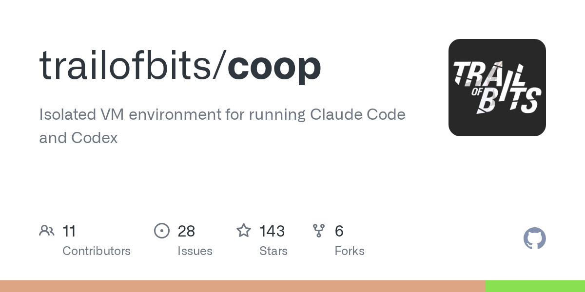
iOS Visual Regression Testing with simctl and Pixel Diffs
A hands-on guide to building a screenshot pipeline for iOS using
simctl and pixel diffs, told through a real paywall layout bug. It lists the failure modes (fonts, animations, timing, simulator drift) you must fix before CI results can be trusted. Why it matters: the same lessons apply to Flutter golden tests and Maestro screenshot checks. Good input for the mobile test strategy.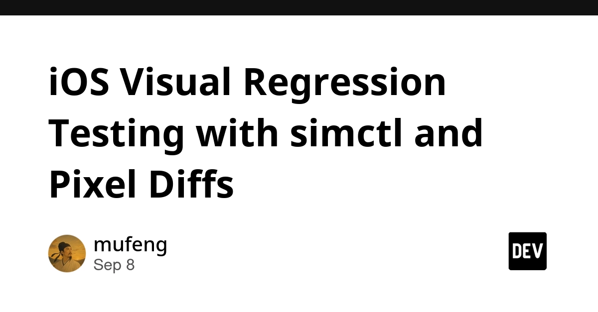
How to Deal With Errors and Failures in LLM-Powered Applications
ByteByteGo walks through the failure types an app hits when it depends on an LLM call: timeouts, rate limits, bad or malformed output, and silent quality drops. It covers retries, fallbacks, validation of model output, and how to design the flow so a failed LLM call does not break the user task. Why it matters: a system-design checklist for any Node.js backend that calls a model API in production.
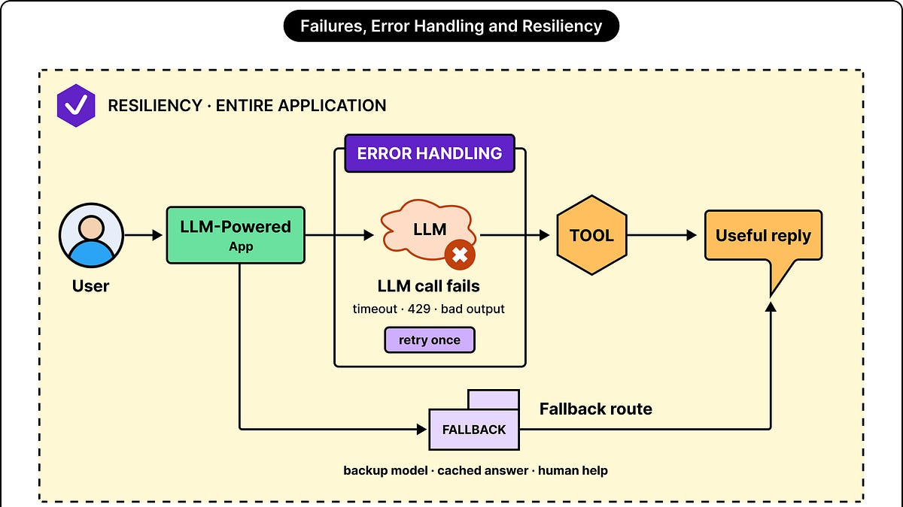
🛠 Tools & releases
Karmada graduates at CNCF
multi-cluster, multi-cloud Kubernetes orchestration is now a graduated project. Worth knowing if you ever need workloads across more than one cluster.
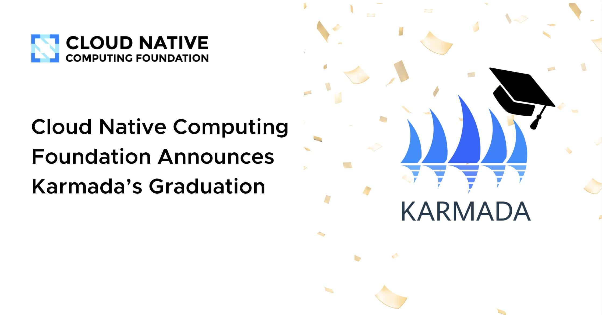
llm 0.35
Simon Willison's CLI adds the new
gpt-6-astra OpenAI model.S
🤖 AI for developers
Coop
VM sandboxes for Claude Code and Codex (see Top 3).
Video compressor
Simon had Claude Code for web build a browser-only FFmpeg (WebAssembly) video tool. A small example of "describe the tool, get the tool" for one-off utilities.
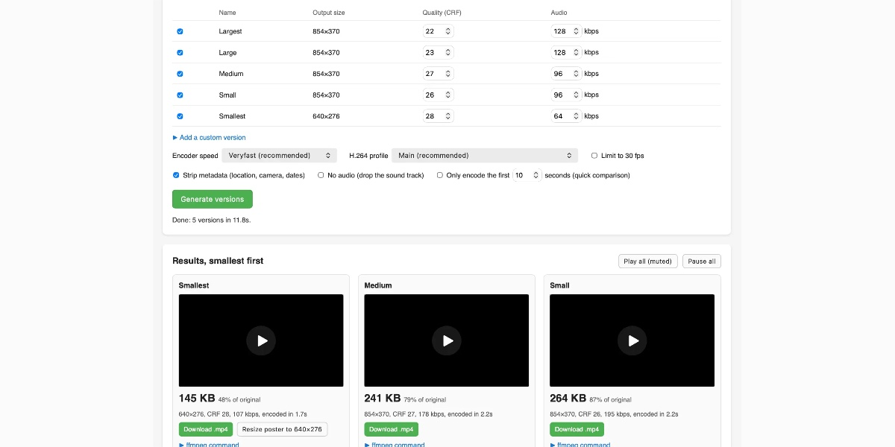
A like is not a relationship: where our agent's permission to reply stops
a clear design pattern for agent guardrails: widen what the agent knows without widening what it may do on its own. Useful thinking for any human-in-the-loop agent.
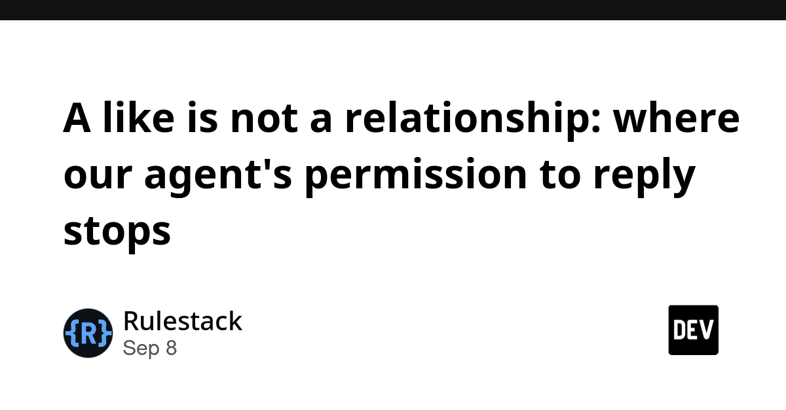
Creepy crawlies
git.kernel.org now spends more CPU serving AI scrapers than serving real users. A reminder to budget for bot traffic when you run public web infrastructure.
S
👔 Engineering & teams
Handling vulnerability reports: Recipe card
a short, practical process for small projects: how to receive, triage, fix, and disclose a security report. Easy to adapt as a team runbook.
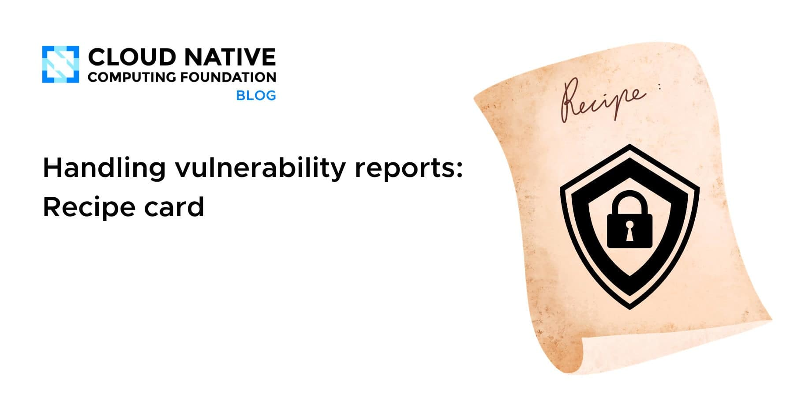
China Merchants Bank: unifying AI training and inference on Kubernetes
case study on lifting GPU utilization from 35% to over 60% by putting training and inference on one platform.
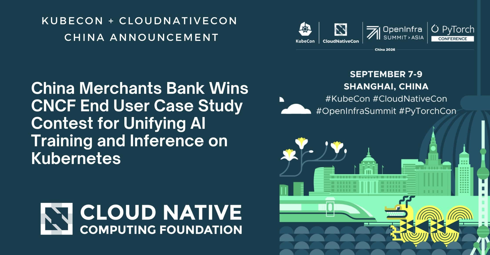
🎯 For me
iOS visual regression pipeline
The is the closest hit: screenshot testing failure modes translate directly to Flutter and Maestro.
Coop
answers a team-adoption question for coding agents: how to let people run them in auto mode safely.
LLM error-handling guide
The is a good review checklist for backend code that calls model APIs.
💡 App ideas & indie builds
Engrim – local-first SQLite memory engine for AI CLIs
(HN) — one shared memory store that Claude Code, Codex, and other CLIs can all read and write. Problem: each tool forgets your project context, and you repeat yourself. Inspiration: small glue tools that sit between several AI tools are a real gap right now.
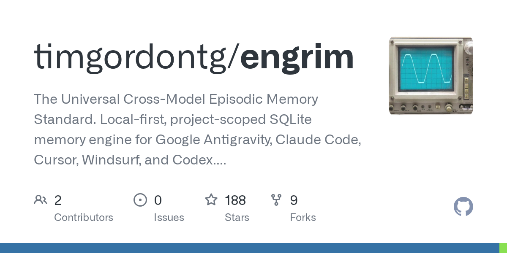
GET Together – a social network where you don't need POST to Post
(HN) — a joke-but-working social network built only on HTTP GET requests. Problem: none, it is play. Inspiration: a tiny technical constraint can be the whole hook, and it drew 54 comments.
G
HomeCat – design your backyard office
(HN) — a planner for people who want a small office shed in the garden. Problem: remote workers want a quiet space but do not know sizes, costs, or layouts. Inspiration: pick one narrow life decision and build the whole tool around it.
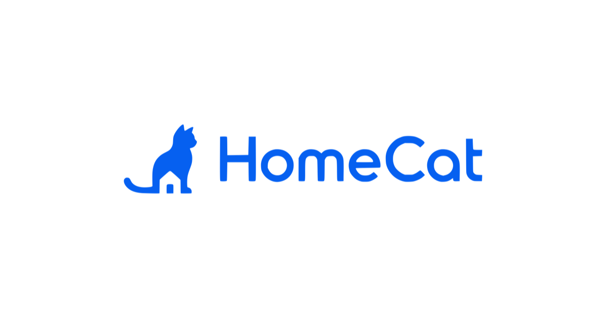
Wg-admin – web UI for an existing WireGuard host
(HN) — a simple web panel that manages peers on a WireGuard server you already run. Problem: adding a device to a VPN means editing config files by hand. Inspiration: "put a UI on a CLI thing people already use" is a repeatable indie pattern.
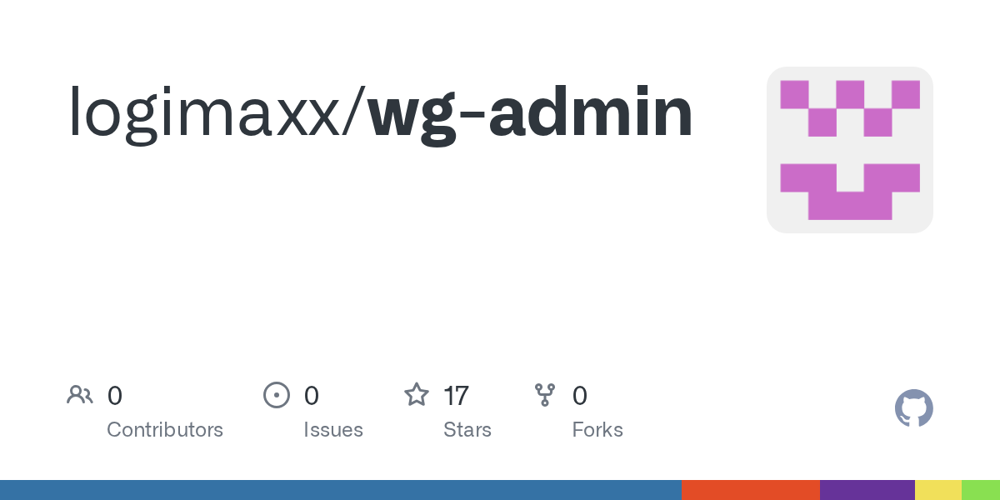
🎓 Try this
Run one of your coding-agent sessions inside Coop with auto mode on. Compare how it feels against your normal setup, and note whether the sandbox blocks anything the agent needs. That gives you a concrete answer when the team asks about running agents unattended.